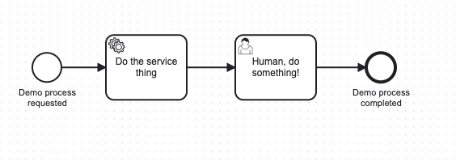

Node.js
As of 8.5.0, the official Camunda 8 JavaScript SDK for Node.js is available via npm.
This SDK is written in TypeScript and has full type support for IDEs and editors that support IntelliSense. It can be used in JavaScript or TypeScript projects.
Prerequisites
This SDK requires Node.js as a runtime environment. It cannot be used in a web browser for a number of technical reasons.
Quick start
A complete working version of the quick start code is available on GitHub.
- Create a new Node.js project that uses TypeScript:
npm init -y
npm install -D typescript
npx tsc --init
- Install the SDK as a dependency:
npm i @camunda8/sdk
Connection configuration
You have two choices:
- Explicit configuration in code
- Zero-configuration constructor with environment variables
The best way to do the configuration is via the zero-configuration constructor in code, and all values for configuration supplied via environment variables. This allows you to test the same code against different environments with no code changes.
The environment variables you need to set are outlined below. Replace these with your secrets and URLs.
To configure a client, and to capture these values when creating the client, review our documentation on setting up client connection credentials.
Self-Managed configuration
# Self-Managed
export ZEEBE_ADDRESS='localhost:26500'
export ZEEBE_CLIENT_ID='zeebe'
export ZEEBE_CLIENT_SECRET='zecret'
export CAMUNDA_OAUTH_URL='http://localhost:18080/auth/realms/camunda-platform/protocol/openid-connect/token'
export CAMUNDA_TASKLIST_BASE_URL='http://localhost:8082'
export CAMUNDA_OPERATE_BASE_URL='http://localhost:8081'
export CAMUNDA_OPTIMIZE_BASE_URL='http://localhost:8083'
export CAMUNDA_MODELER_BASE_URL='http://localhost:8070/api'
If you are running with multi-tenancy enabled:
export CAMUNDA_TENANT_ID='<default>'
If your installation does not have TLS on Zeebe:
export CAMUNDA_SECURE_CONNECTION=false
If you are using the components without Identity, disable OAuth:
export CAMUNDA_AUTH_STRATEGY='NONE'
Camunda SaaS configuration
export ZEEBE_ADDRESS='5c34c0a7-...-125615f7a9b9.syd-1.zeebe.camunda.io:443'
export ZEEBE_CLIENT_ID='yvvURO...'
export ZEEBE_CLIENT_SECRET='iJJu-SHg...'
export CAMUNDA_TASKLIST_BASE_URL='https://syd-1.tasklist.camunda.io/5c34c0a7-...-125615f7a9b9'
export CAMUNDA_OPTIMIZE_BASE_URL='https://syd-1.optimize.camunda.io/5c34c0a7-...-125615f7a9b9'
export CAMUNDA_OPERATE_BASE_URL='https://syd-1.operate.camunda.io/5c34c0a7-...-125615f7a9b9'
export CAMUNDA_OAUTH_URL='https://login.cloud.camunda.io/oauth/token'
export CAMUNDA_SECURE_CONNECTION=true
To set these explicitly in code, the Camunda8 constructor takes these values, with the same key names, in the constructor.
Using the SDK
- Create a file
index.tsin your IDE. - Import the SDK:
import { Camunda8 } from "@camunda8/sdk";
import path from "path"; // we'll use this later
const camunda = new Camunda8();
- Get a Zeebe gRPC API client. This is used to deploy process models and start process instances:
const zeebe = camunda.getZeebeGrpcApiClient();
- Get an Operate client. This is used to interact with completed processes and deployed process models:
const operate = camunda.getOperateApiClient();
- Get a Tasklist client. This is used to interact programmatically with user tasks:
const tasklist = camunda.getTasklistApiClient();
Deploy a process model
Now, you'll deploy a process model. Network operations are asynchronous and methods that operate over the network return promises, so we will wrap the main function of the program in an async function:
async function main() {
const deploy = await zeebe.deployResource({
processFilename: path.join(process.cwd(), "process.bpmn"),
});
console.log(
`[Zeebe] Deployed process ${deploy.deployments[0].process.bpmnProcessId}`
);
}
main(); // remember to invoke the function
Paste the process model XML below into a file called process.bpmn:
<?xml version="1.0" encoding="UTF-8"?>
<bpmn:definitions xmlns:bpmn="http://www.omg.org/spec/BPMN/20100524/MODEL" xmlns:bpmndi="http://www.omg.org/spec/BPMN/20100524/DI" xmlns:dc="http://www.omg.org/spec/DD/20100524/DC" xmlns:zeebe="http://camunda.org/schema/zeebe/1.0" xmlns:di="http://www.omg.org/spec/DD/20100524/DI" xmlns:modeler="http://camunda.org/schema/modeler/1.0" id="Definitions_14f3xb6" targetNamespace="http://bpmn.io/schema/bpmn" exporter="Camunda Modeler" exporterVersion="5.8.0" modeler:executionPlatform="Camunda Cloud" modeler:executionPlatformVersion="8.1.0">
<bpmn:process id="c8-sdk-demo" name="C8 SDK Demo" isExecutable="true">
<bpmn:startEvent id="StartEvent_1">
<bpmn:outgoing>Flow_0yqo0wz</bpmn:outgoing>
</bpmn:startEvent>
<bpmn:sequenceFlow id="Flow_0yqo0wz" sourceRef="StartEvent_1" targetRef="Activity_1gwbbuy" />
<bpmn:sequenceFlow id="Flow_0qugen1" sourceRef="Activity_1gwbbuy" targetRef="Activity_0tp91ve" />
<bpmn:endEvent id="Event_0j28rou">
<bpmn:incoming>Flow_03qgl0x</bpmn:incoming>
</bpmn:endEvent>
<bpmn:sequenceFlow id="Flow_03qgl0x" sourceRef="Activity_0tp91ve" targetRef="Event_0j28rou" />
<bpmn:serviceTask id="Activity_1gwbbuy" name="Do the service thing">
<bpmn:extensionElements>
<zeebe:taskDefinition type="service-task" />
</bpmn:extensionElements>
<bpmn:incoming>Flow_0yqo0wz</bpmn:incoming>
<bpmn:outgoing>Flow_0qugen1</bpmn:outgoing>
</bpmn:serviceTask>
<bpmn:userTask id="Activity_0tp91ve" name="Human, do something!">
<bpmn:incoming>Flow_0qugen1</bpmn:incoming>
<bpmn:outgoing>Flow_03qgl0x</bpmn:outgoing>
</bpmn:userTask>
</bpmn:process>
<bpmndi:BPMNDiagram id="BPMNDiagram_1">
<bpmndi:BPMNPlane id="BPMNPlane_1" bpmnElement="c8-sdk-demo">
<bpmndi:BPMNShape id="_BPMNShape_StartEvent_2" bpmnElement="StartEvent_1">
<dc:Bounds x="179" y="99" width="36" height="36" />
</bpmndi:BPMNShape>
<bpmndi:BPMNShape id="Event_0j28rou_di" bpmnElement="Event_0j28rou">
<dc:Bounds x="592" y="99" width="36" height="36" />
</bpmndi:BPMNShape>
<bpmndi:BPMNShape id="Activity_1rvlo9s_di" bpmnElement="Activity_1gwbbuy">
<dc:Bounds x="270" y="77" width="100" height="80" />
<bpmndi:BPMNLabel />
</bpmndi:BPMNShape>
<bpmndi:BPMNShape id="Activity_1wxn0pq_di" bpmnElement="Activity_0tp91ve">
<dc:Bounds x="430" y="77" width="100" height="80" />
<bpmndi:BPMNLabel />
</bpmndi:BPMNShape>
<bpmndi:BPMNEdge id="Flow_0yqo0wz_di" bpmnElement="Flow_0yqo0wz">
<di:waypoint x="215" y="117" />
<di:waypoint x="270" y="117" />
</bpmndi:BPMNEdge>
<bpmndi:BPMNEdge id="Flow_0qugen1_di" bpmnElement="Flow_0qugen1">
<di:waypoint x="370" y="117" />
<di:waypoint x="430" y="117" />
</bpmndi:BPMNEdge>
<bpmndi:BPMNEdge id="Flow_03qgl0x_di" bpmnElement="Flow_03qgl0x">
<di:waypoint x="530" y="117" />
<di:waypoint x="592" y="117" />
</bpmndi:BPMNEdge>
</bpmndi:BPMNPlane>
</bpmndi:BPMNDiagram>
</bpmn:definitions>
For reference, this is the model we are using:

You can run the program now, and see the process model deploy to Camunda:
npx ts-node index.ts
If your configuration is correct, you will see the following:
Deployed process c8-sdk-demo
Create a service worker
Outside the main function, add the following code:
console.log("Starting worker...");
zeebe.createWorker({
taskType: "service-task",
taskHandler: (job) => {
console.log(`[Zeebe Worker] handling job of type ${job.type}`);
return job.complete({
serviceTaskOutcome: "We did it!",
});
},
});
This will start a service task worker that runs in an asynchronous loop, invoking the taskHandler function whenever a job for the service task type service-task is available.
The handler must return a job completion function - fail, complete, or forward. This is enforced by the type system and ensures you do not write code that does not have code paths that do not respond to Zeebe after taking a job. The job.complete function can take an object that represents variables to update.
Create a programmatic human task worker
Our process has a human task after the service task. The service task worker will complete the service task job, and we will complete the human task using the Tasklist API client.
Add the following code beneath the service worker code:
console.log(`Starting human task poller...`);
setInterval(async () => {
const res = await tasklist.searchTasks({
state: "CREATED",
});
if (res.length > 0) {
console.log(`[Tasklist] fetched ${res.length} human tasks`);
res.forEach(async (task) => {
console.log(
`[Tasklist] claiming task ${task.id} from process ${task.processInstanceKey}`
);
const t = await tasklist.assignTask({
taskId: task.id,
assignee: "demobot",
allowOverrideAssignment: true,
});
console.log(
`[Tasklist] servicing human task ${t.id} from process ${t.processInstanceKey}`
);
await tasklist.completeTask(t.id, {
humanTaskStatus: "Got done",
});
});
} else {
console.log("No human tasks found");
}
}, 3000);
We now have an asynchronously polling service worker and an asynchronously polling human task worker.
The last step is to create a process instance.
Create a process instance
There are two options for creating a process instance:
- For long-running processes, use
createProcessInstance, which returns as soon as the process instance is created with the process instance id. - For the shorter-running process we are using, use
createProcessInstanceWithResult, which awaits the completion of the process and returns with the final variable values.
- Locate the following line in the
mainfunction:
console.log(
`[Zeebe] Deployed process ${res.deployments[0].process.bpmnProcessId}`
);
- Inside the
mainfunction, add the following:
const p = await zeebe.createProcessInstanceWithResult({
bpmnProcessId: `c8-sdk-demo`,
variables: {
humanTaskStatus: "Needs doing",
},
});
console.log(`[Zeebe] Finished Process Instance ${p.processInstanceKey}`);
console.log(`[Zeebe] humanTaskStatus is "${p.variables.humanTaskStatus}"`);
console.log(
`[Zeebe] serviceTaskOutcome is "${p.variables.serviceTaskOutcome}"`
);
- Run the program with the following command:
npx ts-node index.ts
You should see a output similar to the following:
Creating worker...
Starting human task poller...
[Zeebe] Deployed process c8-sdk-demo
[Zeebe Worker] handling job of type service-task
[Tasklist] fetched 1 human tasks
[Tasklist] claiming task 2251799814895765 from process 2251799814900881
[Tasklist] servicing human task 2251799814895765 from process 2251799814900881
[Zeebe] Finished Process Instance 2251799814900881
[Zeebe] humanTaskStatus is "Got done"
[Zeebe] serviceTaskOutcome is "We did it!"
The program will continue running until you hit Ctrl+C. This is because both the service worker and the task poller we wrote are running in continuous loops.
To explore the functionality of the SDK, there are a few more things you can do, outlined below.
Retrieve a process instance
When you create a process instance that runs for some time, many times you will do this by creating a process with createProcessInstance and getting back the process instance key of the running process, rather than waiting for it to complete.
To examine the process instance status, use the process instance key to query the Operate API. You can also examine process instances after they complete in the same way. We'll do this with the process instance that we created after it completes.
- Locate the following line in the
mainfunction:
console.log(
`[Zeebe] serviceTaskOutcome is "${p.variables.serviceTaskOutcome}"`
);
- After that line, inside the
mainfunction, add the following:
const historicalProcessInstance = await operate.getProcessInstance(
p.processInstanceKey
);
console.log("[Operate]", historicalProcessInstance);
When you run the program now, you will see an additional output similar to the following:
{
key: 2251799814905817,
processVersion: 1,
bpmnProcessId: 'c8-sdk-demo',
startDate: '2024-04-08T09:11:06.157+0000',
endDate: '2024-04-08T09:11:12.403+0000',
state: 'COMPLETED',
processDefinitionKey: 2251799814900879,
}
The state may be ACTIVE rather than COMPLETED. This occurs because the data read over the Operate API is historical data from the Zeebe exporter, and lags behind the actual state of the system. It is eventually consistent.
Further steps
Consult the complete API documentation for the SDK.